<title>Studio 113 Brand Book</title>
<meta name="viewport" content="width=device-width, initial-scale=1, viewport-fit=cover">
<link rel="preconnect" href="https://fonts.googleapis.com">
<link rel="preconnect" href="https://fonts.gstatic.com" crossorigin>
<link href="https://fonts.googleapis.com/css2?family=Forum&family=EB+Garamond:ital,wght@0,400;0,500;0,600;0,700;0,800;1,400;1,500&family=Montserrat:wght@400;500;600&display=swap" rel="stylesheet">
<style>
/* Layout: one long letter from Park Street — black ground, the stamp arrives by post, everything else printed on paper and laid on a dark desk. Single dark look by choice (the brand's own black). */
:root {
  --ink: #0A0A0A;          /* brand black, the page ground */
  --desk: #121010;         /* the desk the postcards sit on */
  --paper: #F4ECDD;        /* paper sections and swatch perforations */
  --card: #F8F0DF;         /* postcard stock */
  --floral: #FFF8EE;       /* brand floral white, text on black */
  --teal: #016953;         /* brand teal green */
  --mint: #7FC4B0;         /* teal lifted for small accents on black */
  --muted: rgba(255,248,238,.6);
  --rule: rgba(255,248,238,.14);
  --display: "Forum", "EB Garamond", Georgia, serif;   /* primary brand font */
  --serif: "EB Garamond", Garamond, Georgia, serif;     /* secondary brand font */
  --sans: "Montserrat", "Helvetica Neue", Arial, sans-serif;
  --mono: ui-monospace, "SFMono-Regular", Menlo, monospace;
  --gutter: clamp(16px, 4vw, 48px);
  color-scheme: dark;
}
* { box-sizing: border-box; }
html { background: var(--ink); }
body { margin: 0; background: var(--ink); color: var(--floral); font-family: var(--sans); -webkit-font-smoothing: antialiased; }
img { display: block; max-width: 100%; }
h1, h2, h3, p, figure { margin: 0; }
h2, h3 { text-wrap: balance; }
.wrap { padding-inline: var(--gutter); }
.serif { font-family: var(--serif); }
.eyebrow { font: 600 10px/1.2 var(--sans); letter-spacing: .28em; text-transform: uppercase; }

/* section header */
.sec { padding-block: clamp(56px, 9vw, 110px); }
.sec-head { display: flex; flex-wrap: wrap; align-items: baseline; justify-content: space-between; gap: 8px 24px; padding-bottom: 16px; margin-bottom: clamp(32px, 5vw, 56px); border-bottom: 1px solid var(--rule); }
.sec-head .eyebrow { color: var(--mint); }
.sec-head h2 { font: 400 clamp(30px, 5vw, 52px)/1 var(--display); }
.on-paper { background: var(--paper); color: var(--ink); }
.on-paper .sec-head { border-color: rgba(10,10,10,.15); }
.on-paper .sec-head .eyebrow { color: var(--teal); }

/* 1 · wordmark on black */
.hero { min-height: min(86vh, 760px); display: grid; place-items: center; padding-block: 72px; }
.hero img { width: min(78%, 760px); animation: rise 1.4s cubic-bezier(.2,.7,.2,1) both; }
@keyframes rise { from { opacity: .001; transform: translateY(18px); } to { opacity: 1; transform: none; } }

/* 2 · envelope */
.env-sec { display: flex; flex-direction: column; align-items: center; padding-block: 24px 96px; }
.envelope { position: relative; display: block; width: min(520px, 86vw); aspect-ratio: 160 / 100; margin-top: clamp(230px, 56vw, 360px); padding: 0; border: 0; background: none; cursor: pointer; perspective: 1400px; }
.envelope:focus-visible { outline: 2px solid var(--mint); outline-offset: 10px; }
.env-back { position: absolute; inset: 0; z-index: 0; border-radius: 4px; background: #014a3b; box-shadow: 0 24px 40px rgba(0,0,0,.35), 0 3px 6px rgba(0,0,0,.35); }
.env-stamp { position: absolute; left: 50%; bottom: 8%; z-index: 2; width: 34%; transform: translate(-50%, 0); transform-origin: 50% 100%; filter: drop-shadow(0 10px 16px rgba(0,0,0,.45)); }
.env-pocket { position: absolute; inset: 0; z-index: 3; width: 100%; height: 100%; }
.env-address { position: absolute; left: 0; right: 0; bottom: 11%; z-index: 4; text-align: center; font: italic 400 clamp(14px, 2.6vw, 21px)/1.25 var(--serif); color: var(--floral); opacity: .9; pointer-events: none; }
.env-flap { position: absolute; left: 0; top: 0; z-index: 5; width: 100%; height: 62%; transform-origin: 50% 0; transition: transform .5s ease 1.15s, z-index 0s linear 1.4s; }
.envelope[data-state="open"] .env-flap { z-index: 1; transform: rotateX(180deg); transition: transform .7s cubic-bezier(.5,0,.3,1), z-index 0s linear .35s; }
.envelope[data-state="open"] .env-stamp { animation: pop 1.5s cubic-bezier(.3,.7,.25,1) .55s both; }
.envelope[data-state="closed"] .env-stamp { animation: tuck 1.1s cubic-bezier(.5,0,.6,.4) reverse both; }
@keyframes pop { 0% { transform: translate(-50%,0) rotate(0) scale(1); z-index: 2; } 45% { transform: translate(-50%,-150%) rotate(-5deg) scale(1.05); z-index: 2; } 47% { z-index: 6; } 100% { transform: translate(-50%,-62%) rotate(-3deg) scale(1.55); z-index: 6; } }
@keyframes tuck { 0% { transform: translate(-50%,0) rotate(0) scale(1); z-index: 2; } 45% { transform: translate(-50%,-150%) rotate(-5deg) scale(1.05); z-index: 2; } 47% { z-index: 6; } 100% { transform: translate(-50%,-62%) rotate(-3deg) scale(1.55); z-index: 6; } }
.env-hint { margin-top: 32px; color: var(--muted); }

/* 3 · story time */
.story { position: relative; max-width: 1040px; margin-inline: auto; overflow: hidden; border: 1px solid var(--rule); background-color: #0b0b0b;
  background-image: url("data:image/svg+xml,%3Csvg xmlns='http://www.w3.org/2000/svg' width='56' height='56'%3E%3Cpath d='M0 .5H56M.5 0V56' fill='none' stroke='%23FFF8EE' stroke-opacity='.2' stroke-dasharray='1.5 4.5'/%3E%3C/svg%3E");
  background-size: 56px 56px; background-position: center; }
.story::after { content: ""; position: absolute; inset: 0; pointer-events: none; background: radial-gradient(60% 55% at 50% 50%, rgba(11,11,11,.85), rgba(11,11,11,0)); }
.story .corner { position: absolute; z-index: 1; color: rgba(255,248,238,.5); font-size: 9px; }
.story .tl { left: 16px; top: 16px; } .story .tr { right: 16px; top: 16px; } .story .bl { left: 16px; bottom: 16px; } .story .br { right: 16px; bottom: 16px; }
.story-body { position: relative; z-index: 1; max-width: 640px; margin-inline: auto; padding: clamp(88px, 13vw, 150px) 8px; text-align: center; }
.story-body h2 { font: 400 clamp(48px, 9vw, 96px)/1 var(--display); }
.story-body .bar { width: 64px; height: 1px; margin: 36px auto; background: var(--mint); }
.story-body p { font: 400 clamp(17px, 2vw, 21px)/1.65 var(--serif); color: rgba(255,248,238,.82); }
.story-body p + p { margin-top: 20px; }
.draft { display: inline-block; margin-top: 28px; padding: 6px 10px; border: 1px dashed rgba(127,196,176,.5); color: var(--mint); }

/* 4 · Calcutta on film */
.film { position: relative; aspect-ratio: 16 / 9; max-width: 100%; overflow: hidden; background: #0a0806; }
.film > img.photo { width: 100%; height: 100%; object-fit: cover; filter: brightness(.82); animation: flicker 4s steps(40) infinite, drift 28s ease-in-out infinite alternate; }
.film::after { content: ""; position: absolute; inset: 0; pointer-events: none; background: radial-gradient(120% 90% at 50% 45%, transparent 45%, rgba(0,0,0,.65)), linear-gradient(rgba(10,8,6,.15), rgba(10,8,6,.35)); }
.film .scrim { position: absolute; inset: 0; background: radial-gradient(55% 40% at 50% 50%, rgba(8,6,4,.62), rgba(8,6,4,0)), linear-gradient(transparent 70%, rgba(8,6,4,.6)); }
.film .grain { position: absolute; inset: -50%; opacity: .28; mix-blend-mode: overlay; pointer-events: none;
  background-image: url("data:image/svg+xml,%3Csvg xmlns='http://www.w3.org/2000/svg' width='220' height='220'%3E%3Cfilter id='n'%3E%3CfeTurbulence type='fractalNoise' baseFrequency='.9' numOctaves='3' stitchTiles='stitch'/%3E%3CfeColorMatrix values='0 0 0 0 .5 0 0 0 0 .5 0 0 0 0 .5 0 0 0 1.4 -.2'/%3E%3C/filter%3E%3Crect width='220' height='220' filter='url(%23n)'/%3E%3C/svg%3E");
  animation: grain .9s steps(6) infinite; }
.film .scratch { position: absolute; top: 0; bottom: 0; left: 31%; width: 1px; background: linear-gradient(transparent, rgba(255,240,220,.35) 20%, rgba(255,240,220,.15) 70%, transparent); animation: scratch 7s linear infinite; }
.film .mark { position: absolute; inset: 0; display: grid; place-items: center; z-index: 2; }
.film .mark img { width: min(72%, 680px); filter: drop-shadow(0 4px 30px rgba(0,0,0,.6)); }
.film .cap { position: absolute; z-index: 2; bottom: 16px; font-size: 10px; color: rgba(255,248,238,.7); }
.film .cap.l { left: 20px; } .film .cap.r { right: 20px; font-size: 9px; letter-spacing: .04em; text-transform: none; color: rgba(255,248,238,.5); }
@keyframes grain { 0% { transform: translate(0,0); } 20% { transform: translate(-6%,4%); } 40% { transform: translate(4%,-7%); } 60% { transform: translate(-3%,8%); } 80% { transform: translate(7%,2%); } 100% { transform: translate(-5%,-4%); } }
@keyframes flicker { 0%, 100% { filter: brightness(.82); } 10% { filter: brightness(.78); } 12% { filter: brightness(.86); } 40% { filter: brightness(.8); } 42% { filter: brightness(.85); } 70% { filter: brightness(.77); } 72% { filter: brightness(.84); } }
@keyframes drift { from { transform: scale(1.04); } to { transform: scale(1.1) translate(-1.5%, -1%); } }
@keyframes scratch { 0% { left: 31%; opacity: 0; } 8% { opacity: 1; } 30% { left: 33%; opacity: .2; } 31% { opacity: 0; } 55% { left: 68%; opacity: 0; } 58% { opacity: .8; } 80% { left: 66%; opacity: .3; } 82%, 100% { opacity: 0; } }
@media (max-width: 640px) { .film { aspect-ratio: 4 / 5; } .film .cap.r { display: none; } }

/* 5 · logos */
.grid2 { display: grid; grid-template-columns: 1fr; gap: 20px; }
@media (min-width: 760px) { .grid2 { grid-template-columns: 1fr 1fr; } }
.logo-tile { position: relative; display: grid; place-items: center; aspect-ratio: 5 / 4; max-width: 100%; overflow: hidden; background: var(--floral); color: var(--ink); }
.logo-tile.teal { background: var(--teal); color: var(--floral); }
.logo-tile .eyebrow { position: absolute; left: 24px; top: 24px; }
.logo-tile .note { position: absolute; left: 24px; right: 24px; bottom: 22px; font: italic 400 16px/1.3 var(--serif); opacity: .7; }
.logo-tile .stamp, .logo-tile .word { position: absolute; left: 50%; top: 50%; transform: translate(-50%, -50%); }
.logo-tile .stamp { height: 62%; width: auto; }
.logo-tile .word { width: 70%; height: auto; }

/* 6 · colours as stamps */
.swatches { display: grid; gap: 28px; grid-template-columns: repeat(auto-fit, minmax(min(100%, 200px), 1fr)); }
.swatches.accents { margin-top: 28px; grid-template-columns: repeat(auto-fit, minmax(min(100%, 240px), 1fr)); }
.swatch { position: relative; display: flex; flex-direction: column; justify-content: space-between; min-height: 260px; padding: 18px; box-shadow: 0 1px 2px rgba(0,0,0,.12), inset 0 0 0 1px rgba(10,10,10,.08); }
.accents .swatch { min-height: 190px; }
.swatch::before { content: ""; position: absolute; inset: -6px; pointer-events: none;
  background:
    radial-gradient(circle, var(--paper) 5px, transparent 5.5px) 0 0 / 16px 12px repeat-x,
    radial-gradient(circle, var(--paper) 5px, transparent 5.5px) 0 100% / 16px 12px repeat-x,
    radial-gradient(circle, var(--paper) 5px, transparent 5.5px) 0 0 / 12px 16px repeat-y,
    radial-gradient(circle, var(--paper) 5px, transparent 5.5px) 100% 0 / 12px 16px repeat-y; }
.swatch .top { display: flex; justify-content: space-between; align-items: flex-start; }
.swatch .top .eyebrow { opacity: .7; font-size: 9px; }
.swatch .val { font: 400 18px/1 var(--display); opacity: .8; }
.swatch .nm { font: 400 30px/1.1 var(--display); }
.swatch .code { margin-top: 8px; font: 11px/1.6 var(--mono); letter-spacing: .06em; opacity: .75; font-variant-numeric: tabular-nums; }
.palette-note { max-width: 62ch; margin-top: 40px; font: italic 400 19px/1.5 var(--serif); color: rgba(10,10,10,.62); }

/* 7 · fonts */
.font-card { min-width: 0; padding: clamp(24px, 4vw, 40px); border: 1px solid var(--rule); }
.font-card .eyebrow { color: var(--muted); }
.font-card h3 { margin-top: 8px; font: 400 clamp(28px, 3.5vw, 38px)/1.1 var(--display); }
.font-card .aa { margin-top: 24px; font: 400 clamp(88px, 14vw, 160px)/1 var(--display); }
.font-card.garamond h3, .font-card.garamond .aa { font-family: var(--serif); }
.font-card .aa em { color: var(--mint); }
.font-card .abc { margin-top: 24px; font: 400 clamp(18px, 2.2vw, 24px)/1.5 var(--display); letter-spacing: .08em; overflow-wrap: anywhere; }
.font-card.garamond .abc { font-family: var(--serif); letter-spacing: .04em; }
.font-card .about { margin-top: 28px; max-width: 52ch; font: 400 17px/1.6 var(--serif); color: var(--muted); }
.font-card .weights { display: flex; flex-wrap: wrap; gap: 6px 22px; margin-top: 28px; padding-top: 22px; border-top: 1px solid var(--rule); font: 22px/1.3 var(--serif); }
.font-card .web { margin-top: 28px; padding-top: 22px; border-top: 1px solid var(--rule); }
.font-card .web p { margin-top: 8px; font: 400 20px/1.2 var(--sans); }

/* logo grid: construction lines measured on the wordmark (1600 × 382 artwork units) */
.lg-panel { padding: clamp(20px, 4vw, 48px); background: var(--floral); overflow-x: auto; }
.lg-panel svg { display: block; width: 100%; min-width: 520px; height: auto; }
.lg-notes { display: grid; margin-top: clamp(28px, 4vw, 44px); grid-template-columns: repeat(auto-fit, minmax(min(100%, 230px), 1fr)); gap: 0 28px; }
.lg-notes div { padding-block: 16px; border-top: 1px solid var(--rule); }
.lg-notes dt { display: flex; align-items: center; gap: 10px; }
.lg-notes dt i { flex: none; width: 22px; height: 0; border-top: 2px solid var(--c); }
.lg-notes dt i.dash { border-top-style: dashed; }
.lg-notes dd { margin: 8px 0 0; font: 400 18px/1.5 var(--serif); color: rgba(255,248,238,.82); }

/* from mural to stamp */
.m2s { display: grid; gap: 20px; grid-template-columns: 1fr; align-items: start; }
@media (min-width: 860px) { .m2s { grid-template-columns: 1fr auto 1fr auto 1fr; } }
.m2s figure { min-width: 0; }
.m2s .box { position: relative; aspect-ratio: 1128 / 1600; max-width: 100%; overflow: hidden; background: #1a1a1a; }
.m2s .box img { width: 100%; height: 100%; object-fit: cover; }
.m2s .box.stamp-box { display: grid; place-items: center; background: var(--floral); }
.m2s .box.stamp-box img { width: 72%; height: auto; object-fit: contain; }
.m2s .hl { position: absolute; left: .5%; top: 5%; width: 47.9%; height: 42.2%; border: 2px solid var(--mint); box-shadow: 0 0 0 2000px rgba(10,10,10,.35); }
.m2s figcaption { margin-top: 12px; font: italic 400 19px/1.35 var(--serif); color: rgba(255,248,238,.82); }
.m2s figcaption .eyebrow { display: block; margin-bottom: 4px; font-style: normal; color: var(--mint); }
.m2s .arrow { align-self: center; justify-self: center; font: 400 34px/1 var(--display); color: var(--mint); }
@media (max-width: 859px) { .m2s .arrow { transform: rotate(90deg); } }
.m2s-notes { display: grid; margin-top: clamp(32px, 5vw, 56px); grid-template-columns: repeat(auto-fit, minmax(min(100%, 260px), 1fr)); gap: 0 28px; }
.m2s-notes div { padding-block: 16px; border-top: 1px solid var(--rule); }
.m2s-notes dt { color: var(--mint); }
.m2s-notes dd { margin: 8px 0 0; font: 400 18px/1.5 var(--serif); color: rgba(255,248,238,.82); }

/* 8–9 · postcards on the desk */
.desk { background: radial-gradient(90% 70% at 50% 0%, #1a1714, var(--ink) 70%); }
.cards4 { display: grid; gap: clamp(28px, 4vw, 48px); grid-template-columns: repeat(auto-fit, minmax(min(100%, 240px), 1fr)); }
.cards2 { display: grid; gap: clamp(28px, 4vw, 48px); grid-template-columns: repeat(auto-fit, minmax(min(100%, 420px), 1fr)); }
.postcard { padding: clamp(10px, 1.4vw, 18px) clamp(10px, 1.4vw, 18px) 12px; background: var(--card); color: #1a1a1a; transform: rotate(var(--tilt, 0deg)); box-shadow: 0 24px 40px rgba(0,0,0,.5), 0 2px 4px rgba(0,0,0,.35); transition: transform .5s cubic-bezier(.2,.8,.2,1); }
.postcard:hover { transform: rotate(0) translateY(-6px); }
.postcard .ph { overflow: hidden; aspect-ratio: 4 / 5; max-width: 100%; }
.cards2 .postcard .ph { aspect-ratio: 3 / 2; }
.postcard .ph img { width: 100%; height: 100%; object-fit: cover; }
.postcard figcaption { display: flex; align-items: center; justify-content: space-between; gap: 16px; padding-top: 12px; font: italic 400 clamp(18px, 2vw, 24px)/1 var(--serif); }
.postcard figcaption img { width: 36px; }

/* 10 · social */
.social { display: grid; gap: 20px; padding: clamp(16px, 3vw, 32px); grid-template-columns: repeat(auto-fit, minmax(min(100%, 260px), 1fr)); background: var(--paper); }
.post { overflow: hidden; border-radius: 12px; border: 1px solid rgba(10,10,10,.12); background: #0f0f0f; color: var(--floral); }
.post header { display: flex; align-items: center; gap: 10px; padding: 10px 12px; }
.post header .av { display: grid; place-items: center; width: 28px; height: 28px; border-radius: 50%; background: var(--floral); color: var(--ink); font: 600 11px/1 var(--sans); }
.post header b { display: block; font-size: 12px; }
.post header small { display: block; font-size: 10px; color: var(--muted); }
.post img { width: 100%; aspect-ratio: 4 / 5; object-fit: cover; }
.post p { padding: 10px 12px 14px; font-size: 11px; line-height: 1.5; color: var(--muted); }
.post p b { color: var(--floral); }

footer.end { display: grid; place-items: center; gap: 28px; padding-block: 120px; text-align: center; }
footer.end img.s { width: 120px; transform: rotate(-3deg); }
footer.end img.w { width: min(70%, 520px); }

@media (prefers-reduced-motion: reduce) {
  .hero img, .film > img.photo, .film .grain, .film .scratch { animation: none; }
  .film .scratch { display: none; }
  .env-flap, .postcard { transition: none !important; }
  .envelope[data-state] .env-stamp { animation-duration: 1ms; animation-delay: 0s; }
}
</style>

<main>
  <!-- 1 · wordmark on black -->
  <section class="hero wrap" aria-label="Studio 113 wordmark">
    
  </section>

  <!-- 2 · the envelope pops out the stamp -->
  <section class="env-sec wrap" aria-label="The stamp logo arrives by post">
    <button type="button" class="envelope" id="envelope" data-state="idle" aria-label="Open the envelope">
      <span class="env-back"></span>
      
      <svg class="env-pocket" viewBox="0 0 160 100" preserveAspectRatio="none" aria-hidden="true">
        <path d="M0 0 L80 56 L0 100 Z" fill="#015a47"/>
        <path d="M160 0 L80 56 L160 100 Z" fill="#015a47"/>
        <path d="M0 100 L80 44 L160 100 Z" fill="#016953"/>
        <path d="M0 100 L80 44 L160 100" fill="none" stroke="rgba(0,0,0,.18)" stroke-width=".4"/>
      </svg>
      <span class="env-address" aria-hidden="true">To Lady K,<br>Park Street, Calcutta</span>
      <svg class="env-flap" viewBox="0 0 160 62" preserveAspectRatio="none" aria-hidden="true">
        <path d="M0 0 L160 0 L80 62 Z" fill="#017a61"/>
        <path d="M0 0 L80 62 L160 0" fill="none" stroke="rgba(0,0,0,.2)" stroke-width=".4"/>
      </svg>
    </button>
    <p class="eyebrow env-hint" id="env-hint">Tap to open</p>
  </section>

  <!-- 3 · story time -->
  <section class="wrap" style="padding-block: 24px 72px">
    <div class="story">
      <span class="eyebrow corner tl">No. 113</span>
      <span class="eyebrow corner tr">Park Street · Calcutta</span>
      <span class="eyebrow corner bl">House of Kanchana</span>
      <span class="eyebrow corner br">Est. 1967</span>
      <div class="story-body">
        <h2>Story time</h2>
        <div class="bar"></div>
        <p>Lady K is the face of Studio 113. She steps out of a vintage mural that has hung in the House of Kanchana store at 113 Park Street, Calcutta, for decades. The House has dressed the city since 1967, and Studio 113 is its newest label.</p>
        <p>The logo turns her into a postage stamp, after the ornate frames of vintage Indian stamps: her profile from the mural inside an arched window, a flower in her hair, the address 113 Park Street written as the stamp's value, and House of Kanchana as its mark of origin. Like a letter, every saree that leaves the studio carries her with it.</p>
        <span class="eyebrow draft">Draft copy · replace with your own</span>
      </div>
    </div>
  </section>

  <!-- 3b · from mural to stamp -->
  <section class="sec wrap">
    <div class="sec-head"><p class="eyebrow">The source</p><h2>From mural to stamp</h2></div>
    <div class="m2s">
      <figure><div class="box">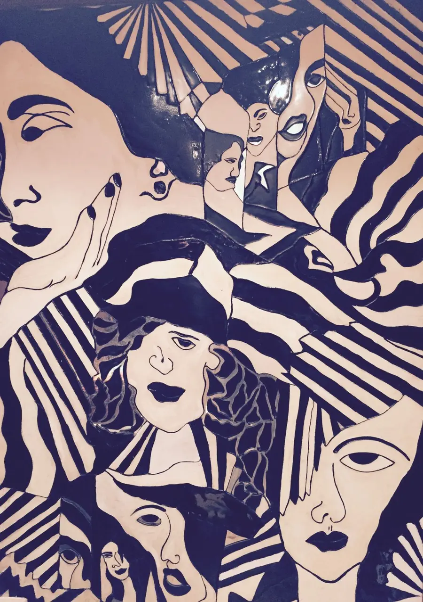<span class="hl" aria-hidden="true"></span></div><figcaption><span class="eyebrow">The mural</span>House of Kanchana, 113 Park Street</figcaption></figure>
      <span class="arrow" aria-hidden="true">→</span>
      <figure><div class="box">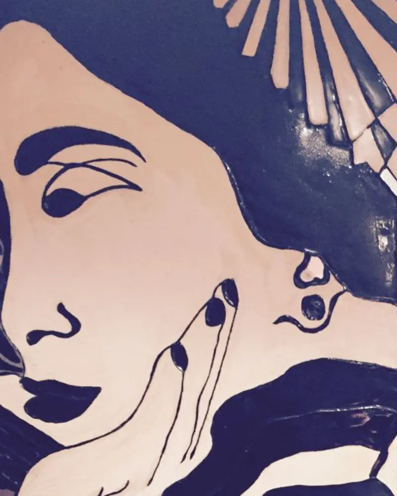</div><figcaption><span class="eyebrow">The detail</span>Lady K, hand at her cheek</figcaption></figure>
      <span class="arrow" aria-hidden="true">→</span>
      <figure><div class="box stamp-box"></div><figcaption><span class="eyebrow">The stamp</span>Redrawn as a vintage postage stamp</figcaption></figure>
    </div>
    <dl class="m2s-notes">
      <div><dt class="eyebrow">Kept from the mural</dt><dd>Her profile, the hand resting on her cheek, the earring, the almond eye and the bold lips.</dd></div>
      <div><dt class="eyebrow">Added for the stamp</dt><dd>A flower in her hair, an arched window and the ornate frame of a vintage Indian stamp.</dd></div>
      <div><dt class="eyebrow">113 PS</dt><dd>The store's address, 113 Park Street, written where a stamp shows its value.</dd></div>
    </dl>
  </section>

  <!-- 4 · Calcutta on grainy film -->
  <section aria-label="Calcutta on film">
    <div class="film">
      
      <span class="grain" aria-hidden="true"></span>
      <span class="scratch" aria-hidden="true"></span>
      <span class="scrim" aria-hidden="true"></span>
      <div class="mark"></div>
      <p class="eyebrow cap l">Chowringhee, Calcutta · 1945</p>
      <p class="cap r">Photo: Clyde Waddell, public domain</p>
    </div>
  </section>

  <!-- 5 · types of logos -->
  <section class="sec wrap">
    <div class="sec-head"><p class="eyebrow">Logo system</p><h2>Types of logos</h2></div>
    <div class="grid2">
      <figure class="logo-tile"><figcaption class="eyebrow">Primary logo</figcaption><p class="note">The stamp. Black is always the first choice.</p></figure>
      <figure class="logo-tile"><figcaption class="eyebrow">Primary logo · colour</figcaption>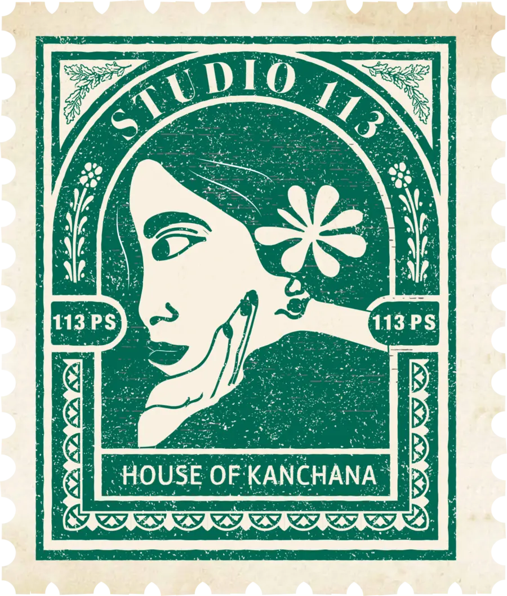<p class="note">Teal green, used sparingly.</p></figure>
      <figure class="logo-tile"><figcaption class="eyebrow">Secondary logo · wordmark</figcaption><p class="note">The wordmark. For small sizes, social and over photography.</p></figure>
      <figure class="logo-tile teal"><figcaption class="eyebrow">One colour · reverse</figcaption><p class="note">For foil, emboss and single-ink print.</p></figure>
    </div>
  </section>

  <!-- 5b · logo grid (wordmark) -->
  <section class="sec wrap">
    <div class="sec-head"><p class="eyebrow">Logo system</p><h2>Logo grid</h2></div>
    <div class="lg-panel">
        <svg viewBox="-230 -200 2160 760" role="img" aria-label="Construction grid over the Studio 113 wordmark: cap height C, line gap of half C, caption height about 0.28 C, caption width five-eighths of the wordmark, and C/2 clear space">
          <rect x="-108" y="-108" width="1816" height="598" fill="none" stroke="#AB4681" stroke-width="3" stroke-dasharray="14 10"/>
          <g fill="#016953" fill-opacity=".06" stroke="#016953" stroke-opacity=".55" stroke-width="2"><rect x="0" y="0" width="123" height="216"/><rect x="160" y="0" width="159" height="216"/><rect x="356" y="0" width="181" height="216"/><rect x="573" y="0" width="188" height="216"/><rect x="799" y="0" width="72" height="216"/><rect x="909" y="0" width="188" height="216"/><rect x="1224" y="0" width="89" height="216"/><rect x="1348" y="0" width="90" height="216"/><rect x="1476" y="0" width="122" height="216"/></g>
          <image href="book/wordmark-black.webp" x="0" y="0" width="1600" height="382"/>
          <g stroke="#016953" stroke-width="2.5"><line x1="-200" y1="0" x2="1800" y2="0"/><line x1="-200" y1="216" x2="1800" y2="216"/></g>
          <g stroke="#B5882D" stroke-width="2.5"><line x1="-200" y1="322" x2="1800" y2="322"/><line x1="-200" y1="381" x2="1800" y2="381"/></g>
          <line x1="800" y1="-190" x2="800" y2="550" stroke="#0A0A0A" stroke-width="2" stroke-dasharray="10 8"/>
          <g stroke="#0A0A0A" stroke-width="2.5" fill="none">
            <path d="M-150 0 V216 M-165 0 H-135 M-165 216 H-135"/>
            <path d="M-150 216 V322 M-165 322 H-135"/>
            <path d="M1750 322 V381 M1735 322 H1765 M1735 381 H1765"/>
            <path d="M0 -150 H1598 M0 -165 V-135 M1598 -165 V-135"/>
            <path d="M298 420 H1308 M298 405 V435 M1308 405 V435"/>
            <path d="M123 -40 H160 M123 -52 V-28 M160 -52 V-28"/>
          </g>
          <g fill="#0A0A0A" font-family="Montserrat, sans-serif" font-weight="600" font-size="30" letter-spacing="2">
            <text x="-200" y="118" text-anchor="end">C</text>
            <text x="-172" y="282" text-anchor="end">C/2</text>
            <text x="1780" y="362">0.28 C</text>
            <text x="800" y="-168" text-anchor="middle">W</text>
            <text x="803" y="468" text-anchor="middle">5/8 W</text>
            <text x="141" y="-66" text-anchor="middle">0.17 C</text>
            <text x="-100" y="540" fill="#AB4681">CLEAR SPACE C/2</text>
          </g>
        </svg>
    </div>
    <dl class="lg-notes">
      <div><dt class="eyebrow"><i style="--c:#016953"></i>Cap height C</dt><dd>The height of STUDIO 113 sets every other measurement in the wordmark.</dd></div>
      <div><dt class="eyebrow"><i style="--c:#B5882D"></i>Caption</dt><dd>HOUSE OF KANCHANA sits half a C below, at about 0.28 C tall, spanning five-eighths of the wordmark width.</dd></div>
      <div><dt class="eyebrow"><i class="dash" style="--c:#FFF8EE"></i>Axis and spacing</dt><dd>Both lines centre on one axis. Letters sit an even 0.17 C apart; the word space is about 0.6 C.</dd></div>
      <div><dt class="eyebrow"><i class="dash" style="--c:#AB4681"></i>Clear space</dt><dd>Keep C/2 clear on every side of the wordmark.</dd></div>
    </dl>
  </section>

  <!-- 6 · colours -->
  <section class="sec wrap on-paper">
    <div class="sec-head"><p class="eyebrow">Colour</p><h2>Colours</h2></div>
    <div class="swatches">
      <div class="swatch" style="background:#0A0A0A;color:#FFF8EE"><div class="top"><span class="eyebrow">Primary</span><span class="val">113</span></div><div><p class="nm">Black</p><p class="code">#0A0A0A<br>RGB 10 10 10</p></div></div>
      <div class="swatch" style="background:#FFFFFF;color:#0A0A0A"><div class="top"><span class="eyebrow">Primary</span><span class="val">113</span></div><div><p class="nm">White</p><p class="code">#FFFFFF<br>RGB 255 255 255</p></div></div>
      <div class="swatch" style="background:#016953;color:#FFF8EE"><div class="top"><span class="eyebrow">Secondary</span><span class="val">113</span></div><div><p class="nm">Teal green</p><p class="code">#016953<br>RGB 1 105 83</p></div></div>
      <div class="swatch" style="background:#FFF8EE;color:#0A0A0A"><div class="top"><span class="eyebrow">Secondary</span><span class="val">113</span></div><div><p class="nm">Floral white</p><p class="code">#FFF8EE<br>RGB 255 248 238</p></div></div>
    </div>
    <div class="swatches accents">
      <div class="swatch" style="background:#AB4681;color:#FFF8EE"><div class="top"><span class="eyebrow">Accent</span><span class="val">113</span></div><div><p class="nm">Raspberry rose</p><p class="code">#AB4681 · RGB 171 70 129</p></div></div>
      <div class="swatch" style="background:#1F3C75;color:#FFF8EE"><div class="top"><span class="eyebrow">Accent</span><span class="val">113</span></div><div><p class="nm">Lapis blue</p><p class="code">#1F3C75 · RGB 31 60 117</p></div></div>
      <div class="swatch" style="background:#B5882D;color:#FFF8EE"><div class="top"><span class="eyebrow">Accent</span><span class="val">113</span></div><div><p class="nm">Alpine</p><p class="code">#B5882D · RGB 181 136 45</p></div></div>
    </div>
    <p class="palette-note">Black and white lead every communication. Teal green and floral white add depth and warmth; raspberry rose, lapis blue and alpine are kept for a glint of colour.</p>
  </section>

  <!-- 7 · fonts -->
  <section class="sec wrap">
    <div class="sec-head"><p class="eyebrow">Typography</p><h2>Fonts</h2></div>
    <div class="grid2">
      <div class="font-card">
        <p class="eyebrow">Primary · Regular</p>
        <h3>Forum</h3>
        <p class="aa">Aa</p>
        <p class="abc">ABCDEFGHIJKLMNOPQRSTUVWXYZ<br>abcdefghijklmnopqrstuvwxyz<br>0123456789</p>
        <p class="about">A display serif with Roman inscriptional capitals. Used for headlines, titles and names.</p>
      </div>
      <div class="font-card garamond">
        <p class="eyebrow">Secondary · Regular to Extra Bold, with italics</p>
        <h3>EB Garamond</h3>
        <p class="aa">Aa <em><i>Aa</i></em></p>
        <p class="abc">ABCDEFGHIJKLMNOPQRSTUVWXYZ<br>abcdefghijklmnopqrstuvwxyz<br><i>abcdefghijklmnopqrstuvwxyz</i><br>0123456789</p>
        <p class="weights"><span style="font-weight:400">Regular</span><span style="font-weight:500">Medium</span><span style="font-weight:600">SemiBold</span><span style="font-weight:700">Bold</span><span style="font-weight:800">ExtraBold</span><span style="font-style:italic">Italic</span></p>
        <div class="web"><span class="eyebrow">Labels and web</span><p>Montserrat Regular</p></div>
      </div>
    </div>
  </section>

  <!-- 8 · product images -->
  <section class="sec wrap desk">
    <div class="sec-head"><p class="eyebrow">Photography</p><h2>Product images</h2></div>
    <div class="cards4">
      <figure class="postcard" style="--tilt:-2.5deg"><div class="ph">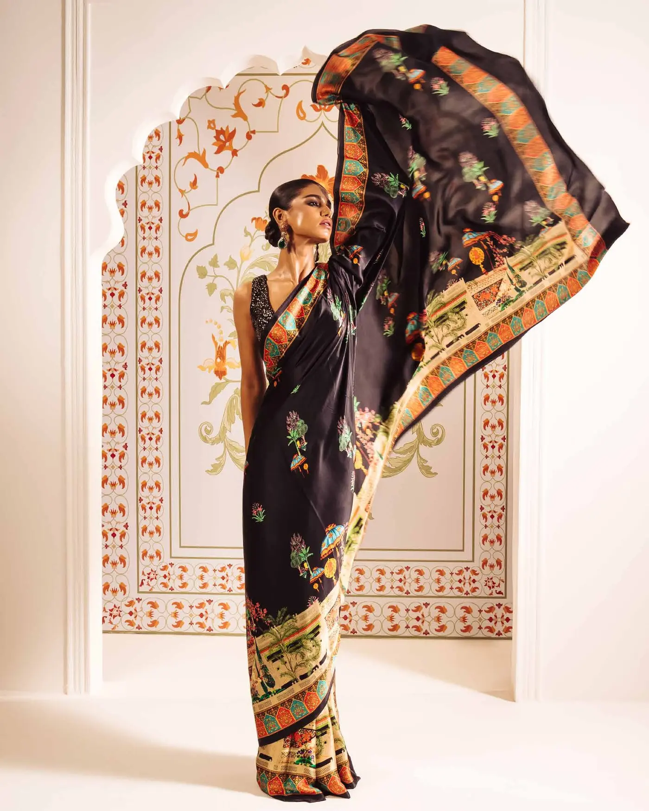</div><figcaption>The arch</figcaption></figure>
      <figure class="postcard" style="--tilt:1.5deg"><div class="ph">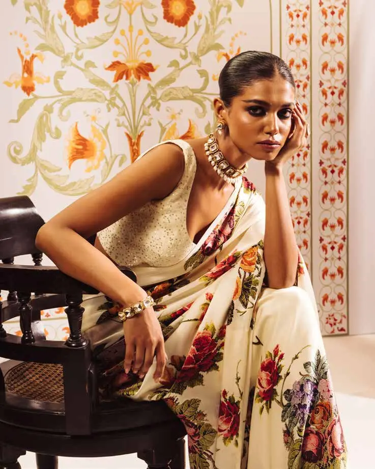</div><figcaption>The portrait</figcaption></figure>
      <figure class="postcard" style="--tilt:-1deg"><div class="ph">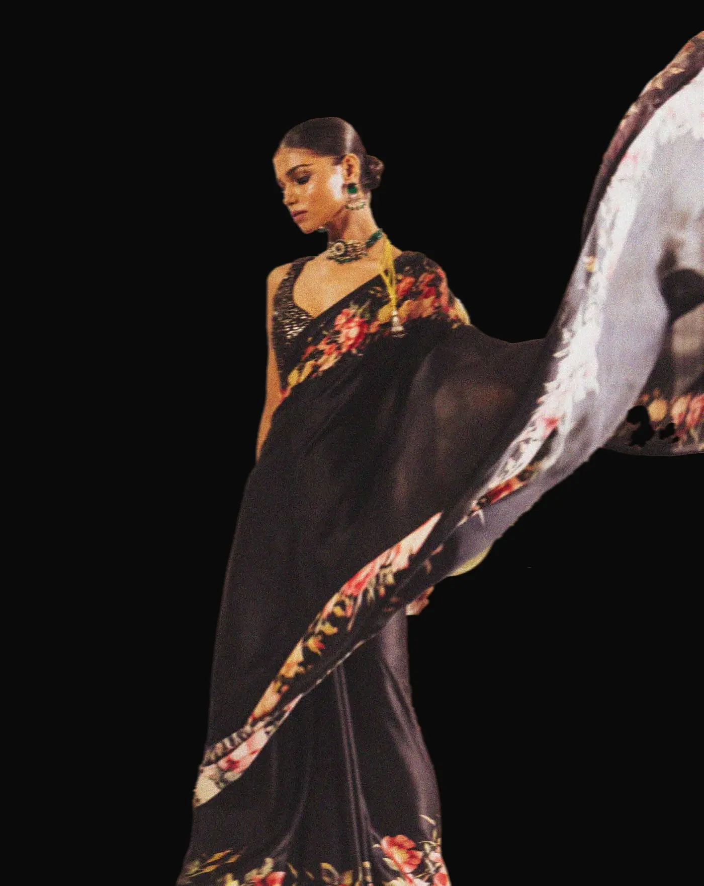</div><figcaption>The drape</figcaption></figure>
      <figure class="postcard" style="--tilt:2.5deg"><div class="ph">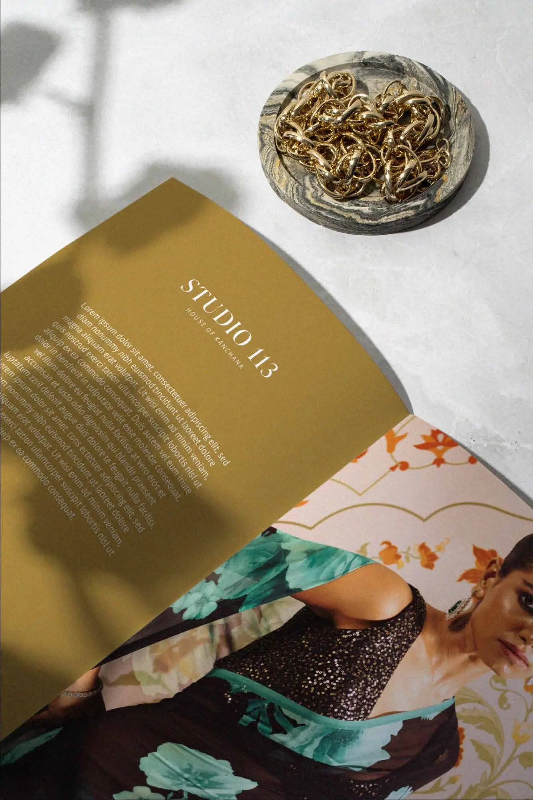</div><figcaption>The edit</figcaption></figure>
    </div>
  </section>

  <!-- 9 · mockups -->
  <section class="sec wrap desk">
    <div class="sec-head"><p class="eyebrow">Applications</p><h2>Mockups</h2></div>
    <div class="cards2">
      <figure class="postcard" style="--tilt:-1.2deg"><div class="ph">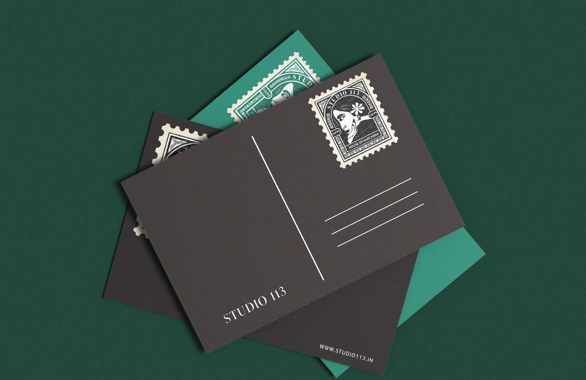</div><figcaption>Postcards</figcaption></figure>
      <figure class="postcard" style="--tilt:1deg"><div class="ph"></div><figcaption>Website</figcaption></figure>
      <figure class="postcard" style="--tilt:.8deg"><div class="ph">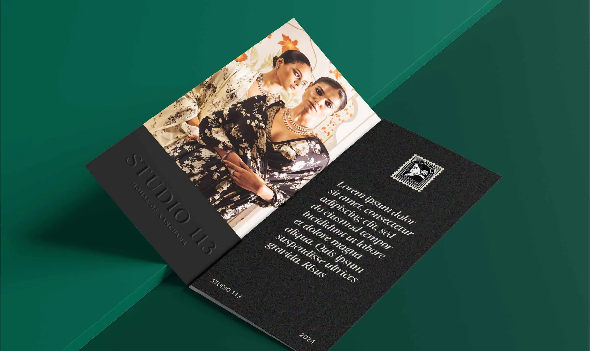</div><figcaption>Lookbook</figcaption></figure>
      <figure class="postcard" style="--tilt:-1.4deg"><div class="ph">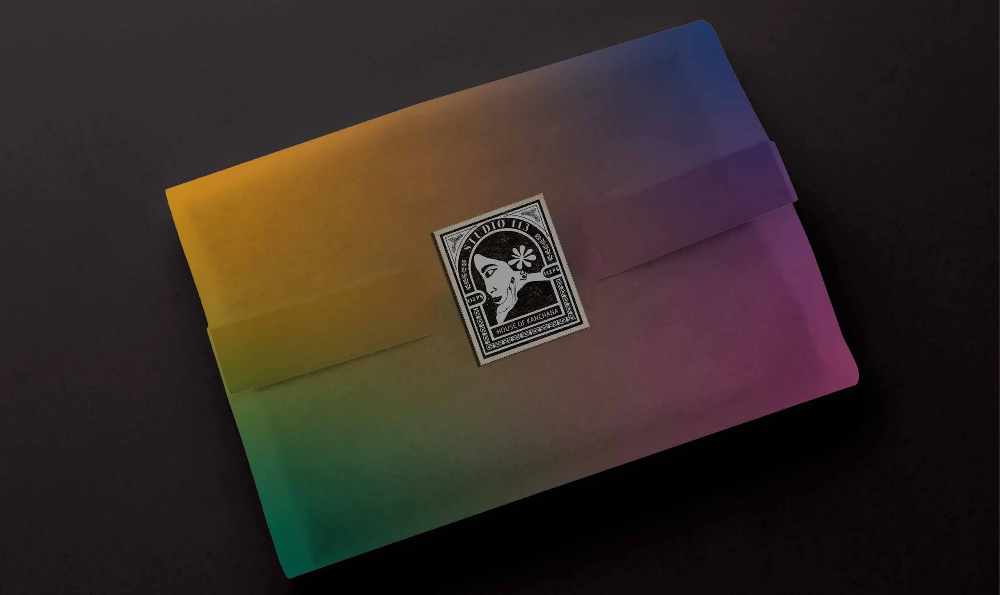</div><figcaption>Packaging</figcaption></figure>
    </div>
  </section>

  <!-- 10 · social media -->
  <section class="sec wrap">
    <div class="sec-head"><p class="eyebrow">Social</p><h2>Social media</h2></div>
    <div class="social">
      <article class="post"><header><span class="av">S</span><span><b>studio113</b><small>House of Kanchana · Calcutta</small></span></header>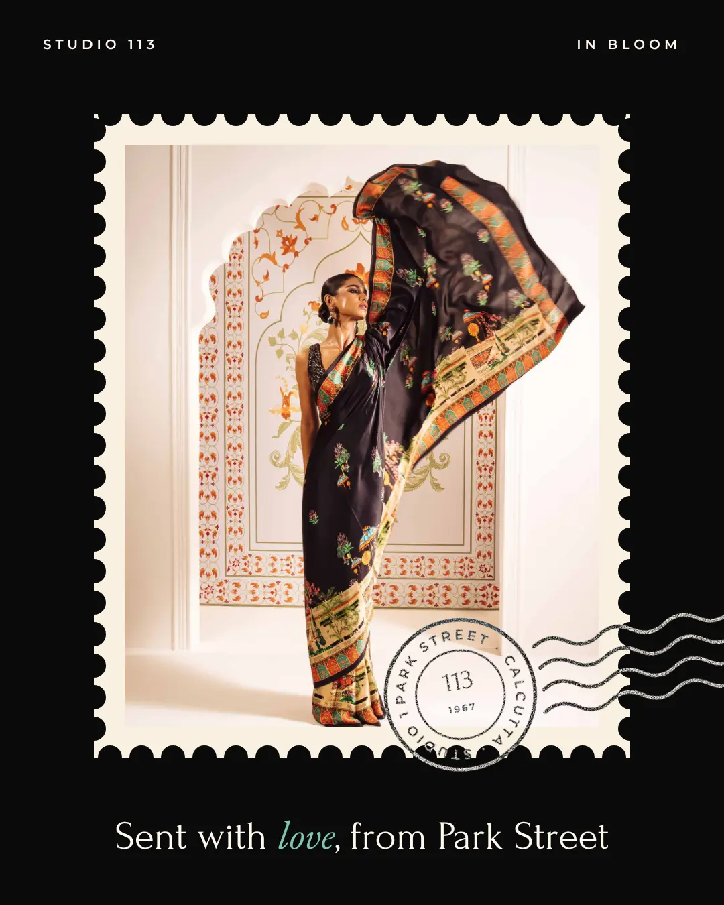<p><b>studio113</b> Sent with love, from Park Street.</p></article>
      <article class="post"><header><span class="av">S</span><span><b>studio113</b><small>House of Kanchana · Calcutta</small></span></header>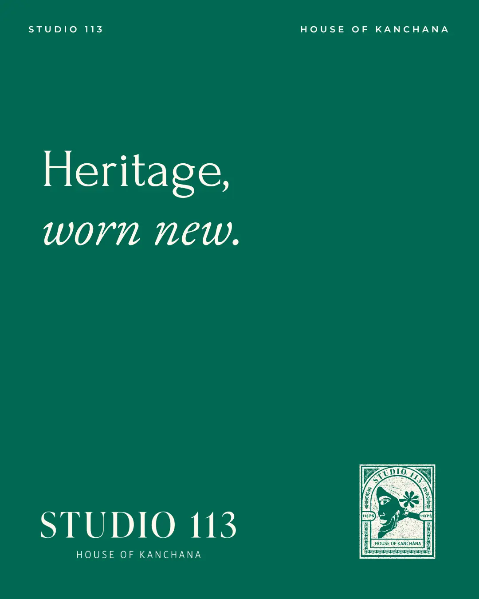<p><b>studio113</b> Heritage, worn new.</p></article>
      <article class="post"><header><span class="av">S</span><span><b>studio113</b><small>House of Kanchana · Calcutta</small></span></header>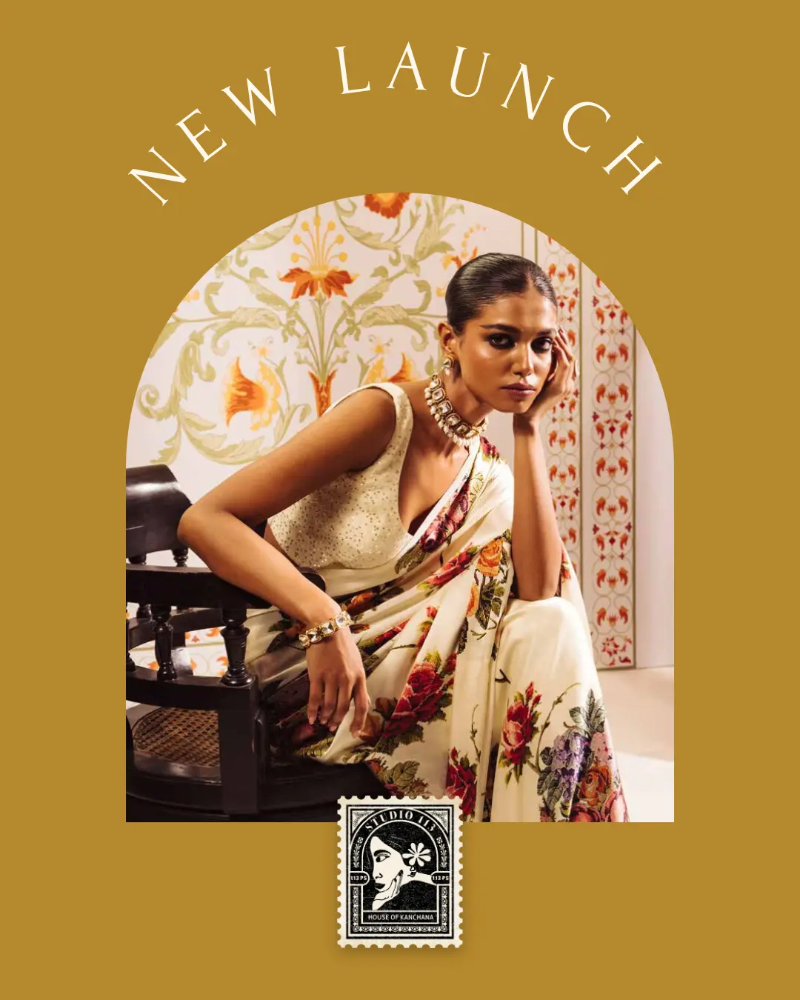<p><b>studio113</b> New launch, framed in the arch.</p></article>
    </div>
  </section>

  <footer class="end wrap">
    
    
  </footer>
</main>

<script>
// Envelope: opens when it scrolls into view (or straight away if motion is reduced); tap to tuck the stamp back or open again.
(function () {
  var env = document.getElementById('envelope');
  var hint = document.getElementById('env-hint');
  function set(state) {
    env.dataset.state = state;
    var open = state === 'open';
    env.setAttribute('aria-label', open ? 'Tuck the stamp back into the envelope' : 'Open the envelope');
    hint.textContent = open ? 'The primary logo · tap to tuck it back' : 'Tap to open';
  }
  env.addEventListener('click', function () { set(env.dataset.state === 'open' ? 'closed' : 'open'); });
  var reduce = window.matchMedia && window.matchMedia('(prefers-reduced-motion: reduce)').matches;
  if (reduce || !('IntersectionObserver' in window)) { set('open'); return; }
  var io = new IntersectionObserver(function (entries) {
    if (entries[0] && entries[0].isIntersecting) { set('open'); io.disconnect(); }
  }, { threshold: 0.5 });
  io.observe(env);
})();
</script>
